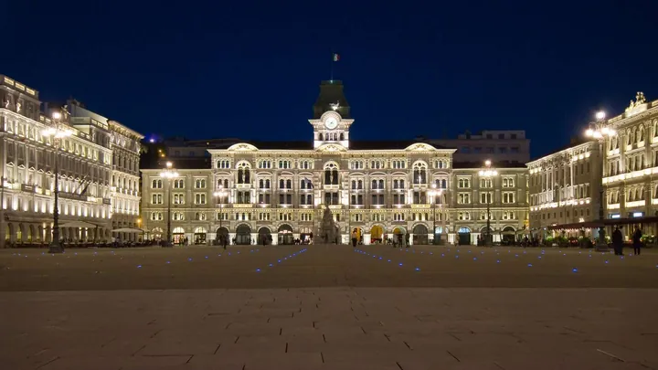

da ven 13 nov a dom 22 nov
Mostra "Insieme – La mostra inclusiva"
Promossa nell'ambito della quarta edizione del progetto “Insieme 2026–2027” dell'Assessorato alle Politiche Sociali del Comune di Trieste, la mostra rappresenta un'occasione per avvicinare la cittadinanza al mondo del sociale attraverso il linguaggio dell'arte e della…
 Indicazioni
Indicazioni
- Costi e prenotazioni
- Costo non indicato · Prenotazione non indicata
- Programma
- Programma da verificare. Apri la fonte ufficiale per orari e possibili aggiornamenti.
- In caso di maltempo
- Nessuna indicazione specifica pubblicata.
- Note
- Acquisito automaticamente dalla fonte.
L’EVENTO
Descrizione completa
Promossa nell'ambito della quarta edizione del progetto “Insieme 2026–2027” dell'Assessorato alle Politiche Sociali del Comune di Trieste, la mostra rappresenta un'occasione per avvicinare la cittadinanza al mondo del sociale attraverso il linguaggio dell'arte e della creatività.
L'esposizione, curata da Linda Simeone, raccoglie fotografie, dipinti, manufatti, oggetti artistici e creazioni realizzate dalle persone che frequentano quotidianamente associazioni, cooperative, centri educativi e strutture del territorio. Le realtà coinvolte rappresentano una parte significativa del tessuto sociale cittadino. Si tratta di associazioni, cooperative ed enti del Terzo Settore, molti dei quali collaborano da anni con i Servizi Sociali del Comune di Trieste, contribuendo alla realizzazione di attività e progetti dedicati alle persone con disabilità, alla promozione dell'autonomia, al sostegno delle fragilità e all'inclusione sociale.
Diciannove realtà con storie, competenze e ambiti di intervento differenti, accomunate dall'impegno quotidiano a favore delle persone e della comunità. La loro partecipazione testimonia il valore di una rete territoriale che, attraverso la collaborazione tra istituzioni, operatori e volontari, contribuisce a costruire una città sempre più attenta all'inclusione e alla partecipazione sociale.
Il progetto espositivo nasce da un percorso di conoscenza diretta delle realtà coinvolte e si sviluppa attraverso tre elementi complementari: l'esposizione delle opere, un catalogo dedicato alle diciannove realtà partecipanti e diciannove videoreportage, che documentano le attività e le esperienze delle organizzazioni presenti.
L'esposizione invita così a superare una visione del sociale legata esclusivamente ai concetti di assistenza e fragilità, proponendo una narrazione che valorizza le capacità individuali, la partecipazione e il contributo che ciascuna persona può offrire alla comunità. Dietro ogni fotografia, dipinto o manufatto si nascondono esperienze di apprendimento, momenti di condivisione, piccoli e grandi traguardi personali, ma anche il lavoro quotidiano di educatori, operatori e volontari.
A completare il percorso espositivo è il catalogo della mostra, pensato come strumento di conoscenza delle organizzazioni coinvolte, delle loro storie e delle attività attraverso le quali contribuiscono quotidianamente alla vita della città. I videoreportage costituiscono un ulteriore livello di approfondimento, offrendo uno sguardo diretto sui luoghi nei quali si sviluppano i progetti e dando voce ai protagonisti.
Ingresso libero.
IL PROGRAMMA
Programma e orari
Appuntamenti raccolti dalle fonti elencate. Dove manca un orario, non è ancora disponibile in questa scheda.
Programma pubblicato
- Dal 2026-11-13 al 2026-11-22
INFORMAZIONI UTILI
Prima di partire
- Controllare la fonte prima di partire.
ORGANIZZAZIONE